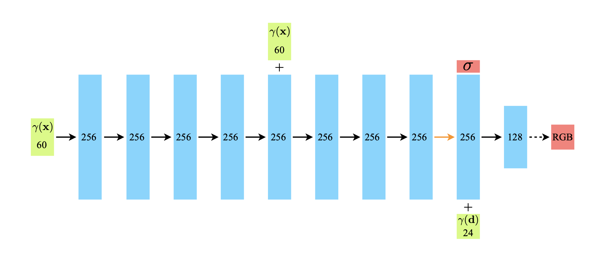
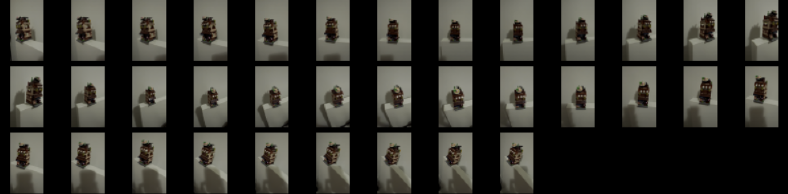

This article discusses the implementation of the NeRF algorithm using the Jax programming language.
machine learning
jax
nerf
Author
Hao Bo Yu
Published
April 3, 2023
Introduction
When I first read the NeRF paper, I was amazed by its elegance and its potential for scene representation using neural networks. I also saw it as an opportunity to learn more about JAX. In this article, I will outline the NeRF algorithm and explain some of the things I’ve learned about Jax.
In the 5-second video above, you can see the output of the NeRF algorithm (Mildenhall et al. 2020) that I implemented in Jax (Bradbury et al. 2018), which was trained on 35 sparse images. But how was this achieved?
NeRF achieves this by integrating rays of light that emanate from the camera and intersect the object. In other words, NeRF can use a bunch of rays to create an image of the object from different viewpoints. NeRF uses a multi-layered perception (MLP) that can be trained to represent a scene from a set of 2D images, and can then generate images taken from new angles. That is how it was done!
The NeRF Neural Network
The NeRF model represents a scene as a neural network, where at each 3D position \vec{x} \in \mathbb{R}^3 and viewing direction \vec{d} \in \mathbb{R}^3, the output of the model is the color (RGB) \vec{c} and the density \sigma for that point in space. Thus, we have:
The network F_\Theta is a Multi-Layer Perceptron (MLP); the network is quite simple, as illustrated in Figure 1. It consists of a series of linear layers with ReLU activations.

Figure 1: The NeRF model figure is taken from Mildenhall et al. (2020). The blue blocks represent MLP layers. Black arrows indicate the ReLU activation layer, the orange arrow indicates no activation and the dashed black line indicates sigmoid activation.
Model in JAX
Using Flax, we can easily define the model in JAX. The code is shown below:
Hover over the code annotations (like ① ) for further explanation.
import jaximport flax.linen as nnimport jax.numpy as jnpclass Model(nn.Module):@nn.compactdef__call__(self, position, direction): x = positionfor i inrange(7): x = nn.Dense(256, name=f"layer_{i}")(x) x = nn.relu(x)# Concatenate x with original inputif i ==4: x = jnp.concatenate([x, position], -1) x = nn.Dense(256, name="layer_7")(x) vol_density = nn.Dense(1, name="layer_8")(x)# Create an output for the volume density that is view-independent# and > 0 by using a ReLU activation function vol_density = jax.nn.relu(vol_density)# Concatenate direction information after the volume density x = jnp.concatenate([x, direction], -1) x = nn.Dense(128, name="layer_9")(x) x = nn.relu(x) x = nn.Dense(3, name="layer_10")(x)# Create an output for the RGB color and make sure it is in the range [0, 1] rgb = nn.sigmoid(x)return rgb, vol_densityL_position =10L_direction =4dummy_pos = jnp.ones((1, L_position *6+3))dummy_dir = jnp.ones((1, L_direction *6+3))model = Model()params = model.init( jax.random.PRNGKey(0), dummy_pos, dummy_dir)print( Model().tabulate( jax.random.PRNGKey(0), dummy_pos, dummy_dir ) )
1
We can use the init method to initialize the model parameters. docs
2
We can use the tabulate method to see the model summary. docs
Consider a line or ray directed pointing away from the camera, with the equation \vec{r}(t) = \vec{o} +t \vec{d}, where \vec{o} is the origin point on the ray, t is a parameter that controls how far along the ray we are and \vec{d} is the direction of the ray - a unit vector pointing away from the camera. The authors split the ray into N segments, with each segment having a length equal to \delta_i = t_{i+1}-t_i. At each segment along the ray, the color c_i and volume density \sigma_i of segment i can be approximated by the neural network F_\Theta(\vec{r}(t_i), \vec{d_i}) \rightarrow (\vec{c}_i, \sigma_i). The expected color of that ray that would appear in our image, \hat{C}(\vec{r}), can be calculated using a set of approximation integral equations, as shown below:
Okay, so what do these equations mean? Let’s start with the color equation. The color of the ray is the sum of the color of each segment along the ray, weighted by the transmittance T_i and the alpha value a_i. The alpha value a_i is the probability that the ray has not encountered anything up to that point. The transmittance T_i is the accumulated transmittance up to that point, which can be thought of as the probability that the ray has not encountered anything up to that point. Therefore, T_i should be 1 for every segment along the ray before a solid object. If the ray encounters a solid object, T_i would start to decrease because the volume density \sigma begins to increase. We can observe that the alpha values a_i for low volume density become 0, ignoring that color in the integral. It’s an intriguing relationship!
The authors designed the network to ensure that the volume density \sigma is view-independent (\partial{\sigma} / \partial{\vec{d}} = 0) by setting the directional input \vec{d} after the \sigma output.
The equations above can be implemented using jax.numpy (docs), a JAX version of numpy, as follows:
Free space and solid objects do not contribute to the final color. Therefore, we can improve efficiency by sampling the volume more densely around points along the ray that have a larger weight, which typically indicates the surfaces of objects. By defining the weight as w_i = T_i a_i, we can rewrite Equation 1 as:
\hat{C}(\vec{r}) = \sum_{i=1}^{N} w_i \vec{c}_i
The authors employ a two-step approach for processing the model. First, it uses a coarse set of points with N_c points. Subsequently, it employs a finer set of N_f points to sample the relevant parts of the volume with denser sampling. To sample these points, the method uses inverse transform sampling based on a probability density function (PDF) created using the expression w_i = T_i(1-\exp(-\sigma_i \delta_i)).
In essence, this method involves the use of a random variable X that represents the element along the ray that is the first surface the ray hits. To ensure correct sampling distribution, the PDF is normalized as follows:
Consider a ray taken from an arbitrary NeRF model. The Probability Density Function (PDF), P(x), the Cumulative Distribution Function (CDF)1, F(x), and the inverse CDF, F^{-1}(x), are plotted below. From the plots, it can be inferred that there is an object surface near the 52^{\text{th}} element along the ray.
1 The CDF of a random variable X is F(x) = P(X\leq x)
Code
''' PDF, CDF, and inverse CDF of the weights'''import numpy as npimport plotly.express as pxfrom plotly.subplots import make_subplotsimport plotly.graph_objects as goweights = np.squeeze(np.load('weights.npy'))k = np.sum(weights) # normalizeweights = weights/kdx =1.x=np.arange(0, 128)cdf = np.cumsum(weights * dx)fig = make_subplots( rows=2, cols=2, subplot_titles=("PDF", "CDF", "Inverse CDF"), specs=[[{}, {}], [{"colspan": 2}, None]],)fig.add_trace(go.Scatter(x=x, y=weights, name='PDF'), row=1, col=1)fig.add_trace(go.Scatter(x=x, y=cdf, name='CDF'), row=1, col=2)# plot inverse CDFfig.add_trace(go.Scatter(x=cdf, y=x, name='inverse CDF'), row=2, col=1)# set x label to be ifig.update_xaxes(title_text="i", row=1, col=1)fig.update_xaxes(title_text="i", row=1, col=2)fig.update_xaxes(title_text="probability", row=2, col=1)# set y label to be probabilityfig.update_yaxes(title_text="probability", row=1, col=1)fig.update_yaxes(title_text="i", row=2, col=1)# remove legendfig.update_layout(showlegend=False)fig.show()# areaarea = np.sum(weights * dx)
Inverse transform sampling involves sampling from a uniform distribution U(0,1) and then using the inverse CDF to find the corresponding value in the original distribution. Observing the inverse CDF, when Z\sim U(0,1), we can see that most values are close to i=52. This observation aligns with the PDF, which exhibits the highest probability near that point along the ray.
To predict the final color, we use a combination of fine and coarse points, which are randomly sampled from specific regions of the distribution. Shown below, the distribution of fine points is heavily centered around the 52^{\text{th}} segment, while the coarse points are evenly spread out over the distribution.
Code
import jax.numpy as jnp import jaxZ = jax.random.uniform(key=jax.random.PRNGKey(2), shape=[128])t_to_sample = jnp.arange(128)cdf = jnp.array(cdf)def inverse_sample(Z, cdf, t_to_sample):""" Samples from the inverse CDF using the inverse transform sampling method. Inputs: Z (jnp.ndarray): Random numbers from a uniform distribution U(0, 1). Shape: (batch_size, num_to_sample) cdf (jnp.ndarray): The CDF of the distribution to sample from. Shape: (batch_size, num_samples) t_to_sample (jnp.ndarray): The points to sample from the distribution. Shape: (batch_size, num_fine_samples) Outputs: sampled_t (jnp.ndarray): The sampled points from the distribution. Shape: (batch_size, num_to_sample) Where num_to_sample = Z.shape[1] """ abs_diff = jnp.abs(cdf[..., jnp.newaxis, :] - Z[..., jnp.newaxis]) argmin = jnp.argmin(abs_diff, 1) sampled_t = jnp.take_along_axis(t_to_sample, argmin, 0)return sampled_tfine_points = inverse_sample(Z, cdf, t_to_sample)coarse_points = jnp.linspace(0, 128, 64)trace1 = go.Histogram(x=coarse_points, nbinsx=64, name='Coarse Points', marker=dict(color='#008080'))trace2 = go.Histogram(x=fine_points, nbinsx=64, name='Fine Points', marker=dict(color='#FFA500'))data = [trace1, trace2]layout = go.Layout(title='Histogram of Coarse and Fine Points for HVS Sampling', xaxis=dict(title='Value'), yaxis=dict(title='Count'))fig = go.Figure(data=data, layout=layout)fig.show()
Jax Learnings
I utilized Jax in combination with flax and optax for this project.
Jax: Jax provides automatic differentiation and XLA capabilities for flexible and efficient computation.
Flax: A neural network library and ecosystem for JAX designed for flexibility - Flax offers a powerful and flexible library to build and train neural networks using Jax.
Optax: A gradient processing and optimization library for JAX - Optax simplifies the process of gradient optimization and updating for Jax models.
The training loop
The training state
During optimization, we need to keep track of some states, like model parameters and optimizer states. Fortunately, by using Flax’s TrainState class, we can conveniently create a training state object that manages the parameter and optimizer (optax) states:
import optaxfrom flax.training import checkpoints, train_state# create learning ratelearning_rate_schedule = optax.cosine_decay_schedule( init_value=config.learning_rate, decay_steps=config.num_epochs * steps_per_epoch)# create train statetx = optax.adam(learning_rate=learning_rate_schedule)state = train_state.TrainState.create(apply_fn=model, params=params, tx=tx)# replicate the state to all devices state = flax.jax_utils.replicate(state)
Create the train state object with train_state.TrainState.create, specifying the model, parameters, and optimizer.
3
If we are using multiple devices for training, use flax.jax_utils.replicate to replicate the state to multiple devices. Use the opposite flax.jax_utils.unreplicate to get the state for a single device.
The training step
The following code implements the training step for NeRF using the single-program, multiple-data (SPMD) technique, which allows for parallel computation of the forward pass of a neural network on different input data across different devices (e.g., TPUs).
To split the batch into sub-batches and have each device perform a sub-batch, we can use jax.pmap. Each device has a copy of the model, and we use pmean to combine values - such as gradients and losses - from all devices; jax.lax.pmean(gradients, "batch").
def train_step(state, key, origins, directions, rgbs, nerf_func, use_hvs):""" Train step Inputs: state: train state key: random key origins: origins of rays [num_devices, batch_size, 3] directions: directions of rays [num_devices, batch_size, 3] rgbs: rgb values of rays [num_devices, batch_size, 3] nerf_func: a function performs the nerf algorithm use_hvs: whether to use hvs Outputs: state: updated train state loss: loss value rgb_pred: predicted rgb values weights: weights of the rays ts: parametric values of the ray """def loss_func(params): (rendered, rendered_hvs), weights, ts = nerf_func( params=params, model_func=state.apply_fn, key=key, origins=origins, directions=directions, ) loss = jnp.mean(jnp.square(rendered - rgbs))if use_hvs: loss += jnp.mean(jnp.square(rendered_hvs - rgbs))return loss, (rendered, weights, ts)# compute loss and grads (loss, (rgbs_pred, weights, ts)), grads = jax.value_and_grad( loss_func, has_aux=True )(state.params)# combine grads and loss from all devices grads = jax.lax.pmean(grads, "batch") loss = jax.lax.pmean(loss, "batch")# apply updates on the combined grads state = state.apply_gradients(grads=grads)return state, loss, rgbs_pred, weights, tsp_train_step = jax.pmap( functools.partial(train_step, nerf_func=nerf_func, use_hvs=config.use_hvs), axis_name="batch",)state = flax.jax_utils.replicate(state)...state, loss, rgb_pred, weights, ts = p_train_step( state, key, origins, directions, rgbs)
0
The loss is computed by comparing the predicted rgb values with the ground truth rgb values for both the coarse and fine renderings.
1
Use jax.pmean to combine the loss and gradients from all devices
2
Update the state by computing gradients and applying them using the state.apply_gradients() method.
3
Use jax.pmap to parallelize the training step across devices
4
If we are using multiple devices for training, use flax.jax_utils.replicate to replicate the state to multiple devices. Use the opposite flax.jax_utils.unreplicate to get the state for a single device.
5
Run the training step
Breakpoints
During debugging, we can use pdb to set breakpoints. But, pdb does not work well with Jax. Instead, we can use jax.debug.breakpoint() to set breakpoints.
jax.debug.breakpoint()
Training details
The model was trained for 400,000 steps, and the learning rate was decayed using a cosine decay schedule. The model was trained on a single A10 GPU (24 GB memory) with a batch size of 2048, the training took about 10 hours.
Training images
Below are the training images used for training the model, in total, there are 35 images, 33 of which are used for training and 2 for validation. The images were taken from an iPhone video of a Ramen restaurant Lego set.

(a) Training images
Figure 2: Training images, 35 images in total.
Results
After training for around 400k steps, the model was able to achieve a validation SSIM score of 0.928.
The following figure shows the ground truth images, the predicted images, and the predicted depth maps. The last column shows the rendered validation images as the model is being trained.
(a) Ground truth image
(b) Predicted image
(c) Predicted depth
(d) Video of rendered validation images
Figure 3: Ground truth images, predicted images, predicted depth maps and rendered validation images.
Conclusion
In this project, I implemented NeRF using Jax and Flax. I also trained a NeRF model on a custom set of images and rendered a custom 5-second video using NeRF.
Learning about NeRF was a lot of fun, and I hope you enjoyed reading this post as much as I enjoyed writing it. Follow me on Twitter for more updates on my projects.
What’s next?
Nerf has exploded in popularity in the last few years, and there are many implementations and extensions of it. Here are some of the extensions that I found and would like to try out:
KiloNeRF: This paper proposes a real-time rendering approach that uses thousands of smaller MLPs to represent parts of a scene, resulting in faster evaluations compared to a single large MLP.
NeuS: This paper introduces NeuS, a novel neural surface reconstruction method that represents the surface as the zero-level set of a signed distance function (SDF).
Additional Resources
If you want to learn more about NeRF and see additional implementations, here are some helpful resources:
Awesome NeRF: Check out the awesome NeRF list for a list of papers, implementations, and resources related to NeRF.
Original NeRF Implementation in TensorFlow: The original NeRF implementation in TensorFlow by Ben Mildenhall is a great starting point for understanding the NeRF algorithm and its implementation details.
NeRF in JAX: The NeRF implementation in JAX by the Google Research team is a powerful and efficient implementation of NeRF using JAX and Flax.
Flax ImageNet Example: The Flax ImageNet example provides a great introduction to using Flax for large-scale deep learning tasks. This example demonstrates how to train a state-of-the-art image classification model on the ImageNet dataset using Flax.
References
Bradbury, James, Roy Frostig, Peter Hawkins, Matthew James Johnson, Chris Leary, Dougal Maclaurin, George Necula, et al. 2018. “JAX: Composable Transformations of Python+NumPy Programs.”http://github.com/google/jax.
Mildenhall, Ben, Pratul P. Srinivasan, Matthew Tancik, Jonathan T. Barron, Ravi Ramamoorthi, and Ren Ng. 2020. “NeRF: Representing Scenes as Neural Radiance Fields for View Synthesis.” arXiv. https://doi.org/10.48550/ARXIV.2003.08934.